VMware的介绍与扩展
服务器虚拟化方向能
一变多
将一台服务器虚拟化成更多的虚拟机
- 大型机的虚拟化：IBM的LPAR
- X86平台虚拟化：Vmware、XenServer、Hyper-v、KVM、Qemu等
多变一
将多台服务器虚拟成一台虚拟机
- 分布式运算（Distributed Computing）
- 网格计算（Grid Computing）
- 并行计算（Parallel Computing）
- 高性能运算（HPC）
虚拟化特征
云计算是一种计算方法，它将按需提供的自助管理虚拟基础架构汇集成高效池，以服务的形式提供计算
通过提高利用率和实现自动化获得高效性
- 池化
- 将计算机转变为按需提供的极富弹性的资源池
- 零接触式基础架构
- 以策略驱动的方式实现资源调配、部署和管理自动化
- 池化
兼具敏捷性和可控性
- 自助服务
- 通过基于策略的资源调配和部署实现轻松访问
- 控制能力
- 基础架构可识别应用程序，并提供内置的可用性可扩展性、安全性和性能保证
- 自助服务
选择的灵活性
- 开放和互操作
- 应用程序可基于开放标准在云之间实现移动
- 利用现有投资
- 云计算为现有应用程序和数据中心带来诸多优势
- 开放和互操作
虚拟化架构
寄居架构（Hosted Architecture）
在操作系统之上安装和运行虚拟化程序，依赖于主机操作系统对设备的支持和物理资源的管理
- 优点：简单，便于实现
- 缺点：安装和运行应用程序依赖于主机操作系统对设备的支持
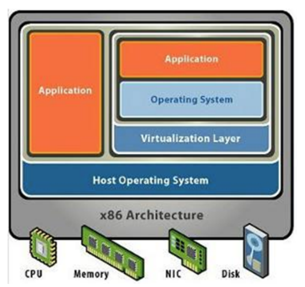
裸金属架构（“Bare Metal” Architecture）
直接在硬件上面安装虚拟化软件，再在其上安装操作系统和应用，依赖虚拟层内核和服务器控制台进行管理。
- 优点：虚拟机不依赖于操作系统，可以支持多种操作系统，多种应用，更加灵活
- 缺点：虚拟层内核开发难度较大
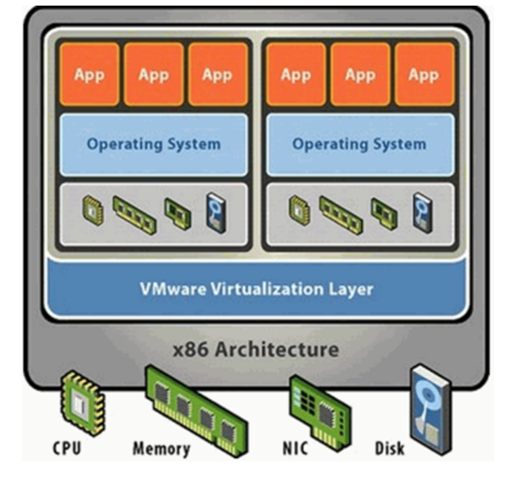
虚拟化架构特性
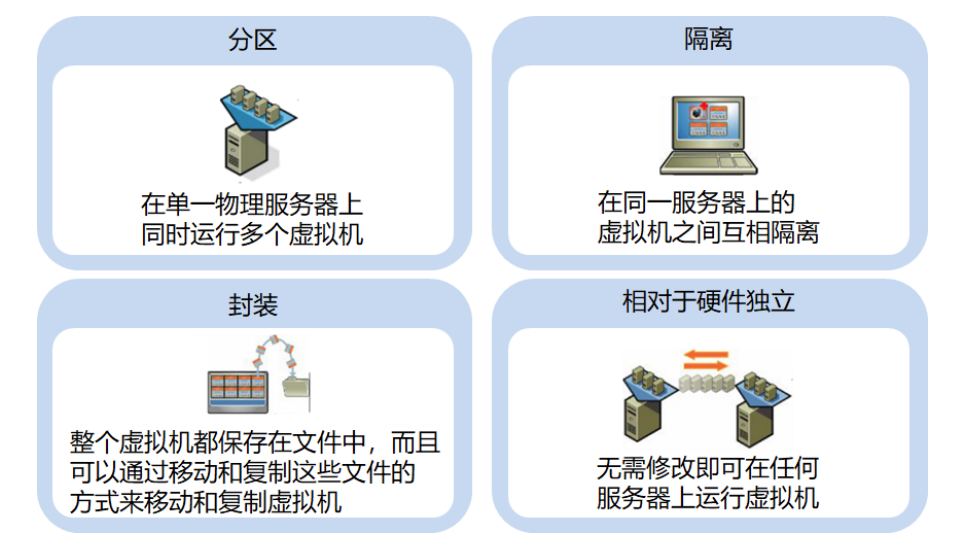
vSphere数据中心的物理拓扑结构
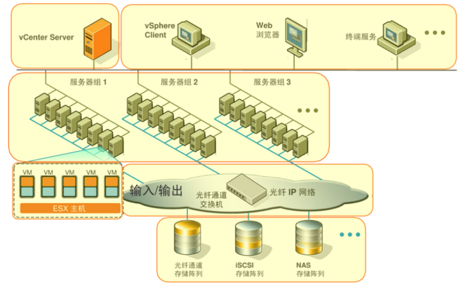
虚拟化优势
IT投资角度
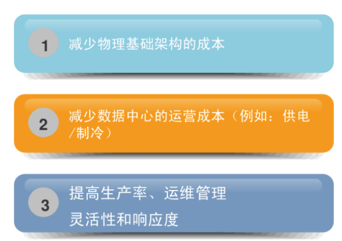
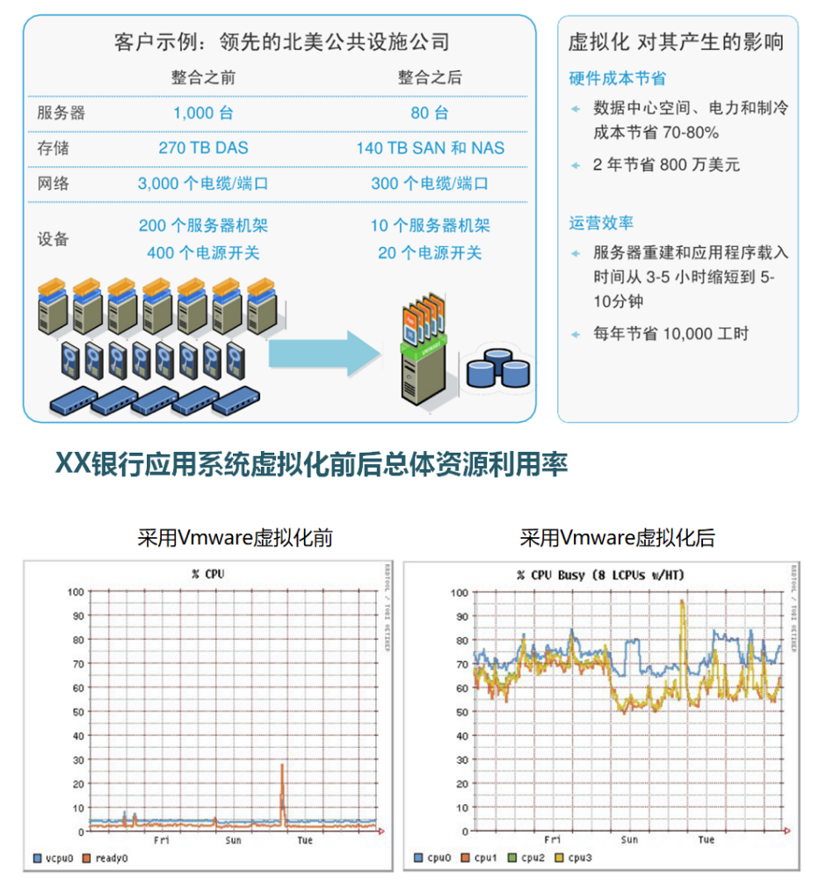
总体拥有成本（TCO）
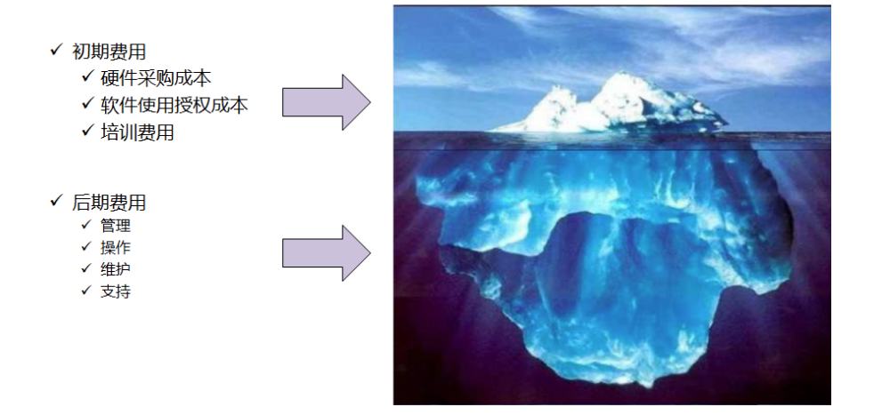
vShpere基础功能介绍
vmotion
Vmotion是什么？
- 通过Vmware Vmotion可以实现虚拟机的动态迁移，而服务不中不断
客户优势
- 零宕机时间：进行有计划的服务器维护和升级迁移工作负债，资源利用率最大化
- 服务器的持续可用性，完整的交易集成
- 支持Fibre Channel和iSCSI SAN环境以及NAS
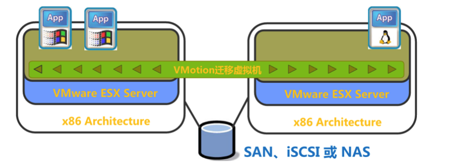
HA
VMware HA是什么？
- Vmware HA就是发生服务器故障是在其他的物理服务器上自动重启虚拟机
技术优势
- 对所有的应用实现了高可用性，并且成本很低
- 不需要完全一致的重复硬件
- 比传统的集群有更高的成本优势，同时易于使用和操作
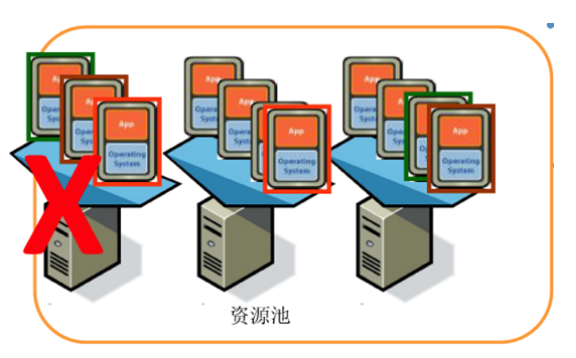
分布式资源调度（DRS）
功能
- 跨资源池动态调整计算资源
- 基于预定义的规则智能分配资源
优势
- 使IT和业务优先级对应
- 动态提高系统管理效率
- 自动化的硬件维护
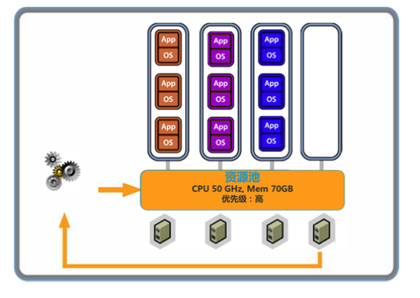
VMware Fault Tolerance（FT）
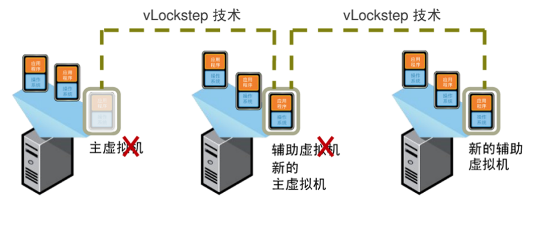
VMware的介绍与扩展
https://xiaolaji.site/20220905/VMware的介绍与扩展/